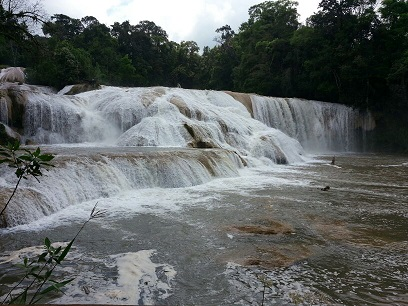
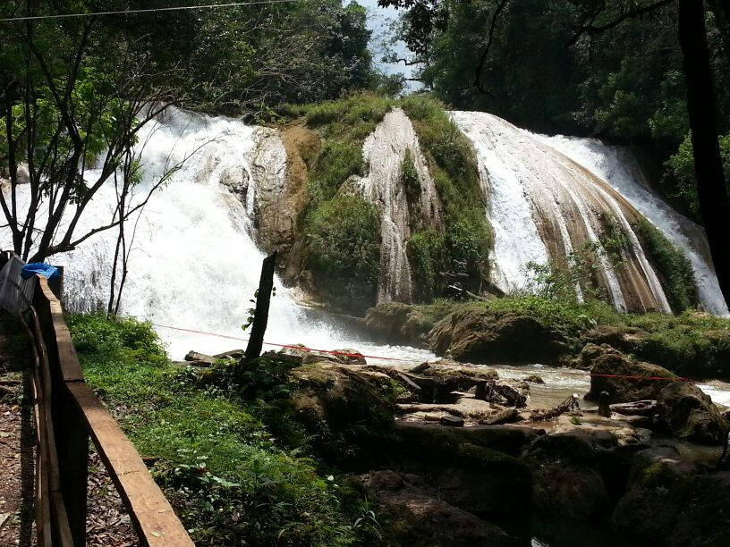
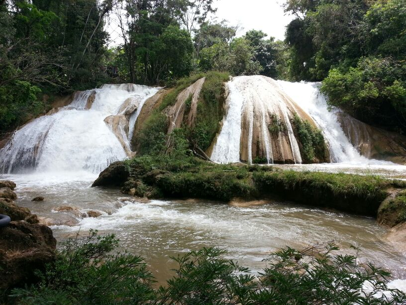
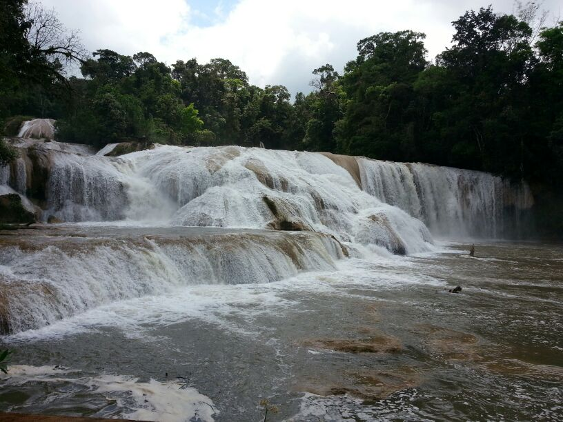
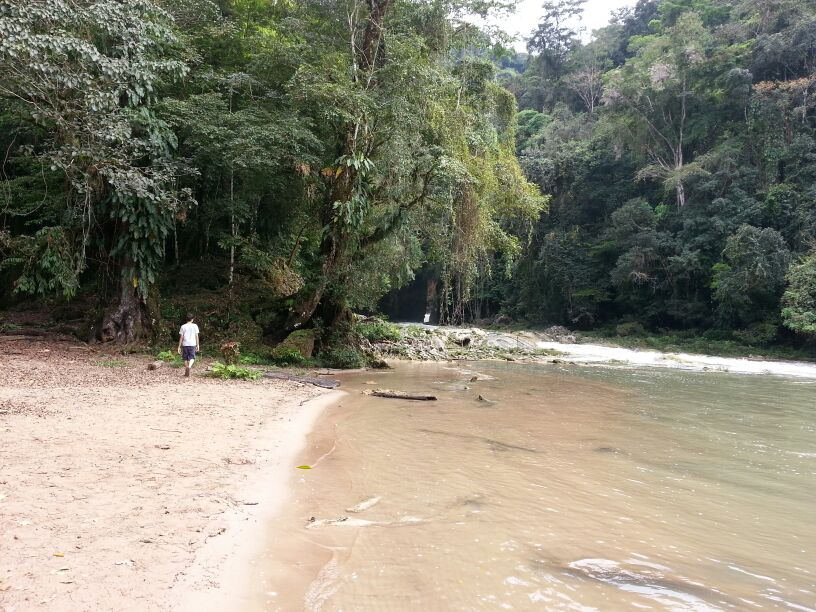

Cascadas que se encuentran al sur de Palenque; formada por grandes velos de agua con su color azul verdoso y ese color verde abundante de su vegetación.
Es un área de los indios Tzeltales se conocen como Montañas de Agua; allí se abre paso el pequeño rio Agua Azul, vertiente del rio Tulija y que a su vez desemboca en el rio Usumascinta.
Se localiza en el municipio de Tumbalá, a 69 kilómetros de la ciudad de palenque.
Puede tomar la carretera de Tuxtla Gutiérrez, diríjase la carretera que conduce a San Cristóbal de las Casas y recorra hacia el municipio de Palenque; seguido se topara con un desvió que se dirige a las Cascadas de Agua Azul. El recorrido es de 5 a 6 horas aproximadamente.
Para llegar puede hacerlo desde palenque, que se localiza a 69 kilómetros o bien por san Cristóbal de las de las Casas, que se localiza a 200 kilómetros.
En el lugar usted puede practicar actividades de esparcimientos como:
* Nadar ( cuenta con balnearios )
* Actividades deportivas como senderismo o Trekking.
* Actividades vinculadas al ambiente nutual como la contemplación de las Cascadas y tomar fotografías de esa gran belleza natural
* Ecoturismo





posicione el mouse sobre las imágenes